Intelligence de sécurité · conçu au Burundi
L'IA locale qui veille sur votre bureau.
Live AI Office transforme les caméras déjà installées en un tableau de bord de sécurité intelligent centré sur le personnel : qui est présent, qui est en retard, les heures sur site et les alertes, en temps réel. Sans cloud : les images et les données ne quittent jamais le bureau.
- 100 %local : aucune image envoyée en ligne
- 0abonnement cloud ou pointeuse à acheter
- FR / ENinterface bilingue
- Temps réelprésence et retards du jour
Le problème
La présence et la sécurité se gèrent encore à l'aveugle.
Cahiers et feuilles Excel
La présence se note à la main. Les retards et absences n'apparaissent qu'à la fin du mois, quand il est trop tard pour agir.
Des heures de vidéo jamais regardées
Les caméras enregistrent, mais personne ne surveille. Après un incident, il faut fouiller les enregistrements.
Des solutions chères et hors du pays
Les pointeuses biométriques et les services cloud coûtent cher et envoient les images du personnel sur des serveurs étrangers.
Fonctionnement
Local et privé par conception.
Tout le traitement se fait sur un ordinateur ordinaire du bureau. Le tableau de bord n'est accessible que depuis cet ordinateur.
- Caméras du bureauréseau local
- Ordinateur du bureauDétection et suiviMoteur de correspondance intelligentRègles : présence, retards, incidents🔒 Base chiffrée
- Tableau de bord
- ✕ Aucun cloud
Aucun cloud
Images, visages et feuilles de temps restent dans le bureau. Rien n'est envoyé en ligne.
Chiffré au repos
Base de données et extraits vidéo chiffrés, clés dans le trousseau du système.
Accès verrouillé
Page servie sur l'ordinateur lui-même, jeton par session, contrôle d'origine, politique de sécurité stricte.
Contrôle humain
Inscriptions, confirmations et réponses aux alertes passent par le responsable, et sont journalisées.
Minimisation
Zones de travail uniquement ; personnes non examinées supprimées après 3 jours ; extraits à durée limitée.
Matériel existant
Un ordinateur de bureau et les caméras déjà en place suffisent.
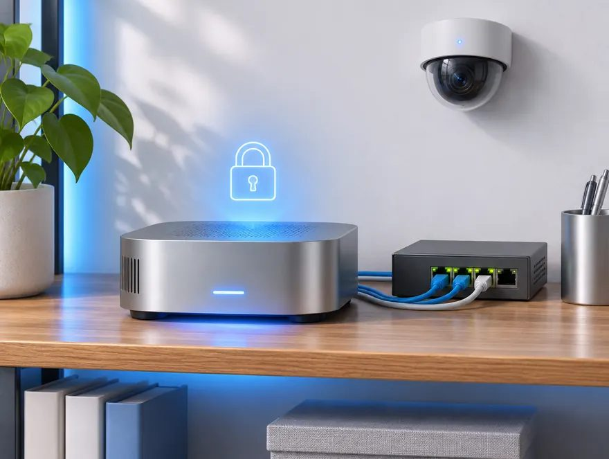
Fonctionnalités
Un seul tableau de bord pour le personnel.
Captures du mode démo : employés fictifs aux portraits générés par IA, journée simulée.
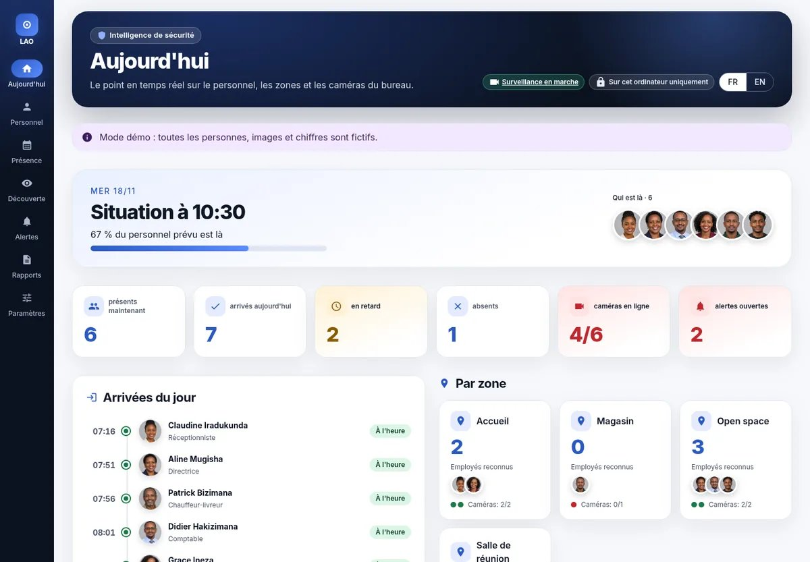
Aujourd'hui
Qui est présent maintenant, arrivées et retards par employé, employés par zone, état de chaque caméra et alertes ouvertes.
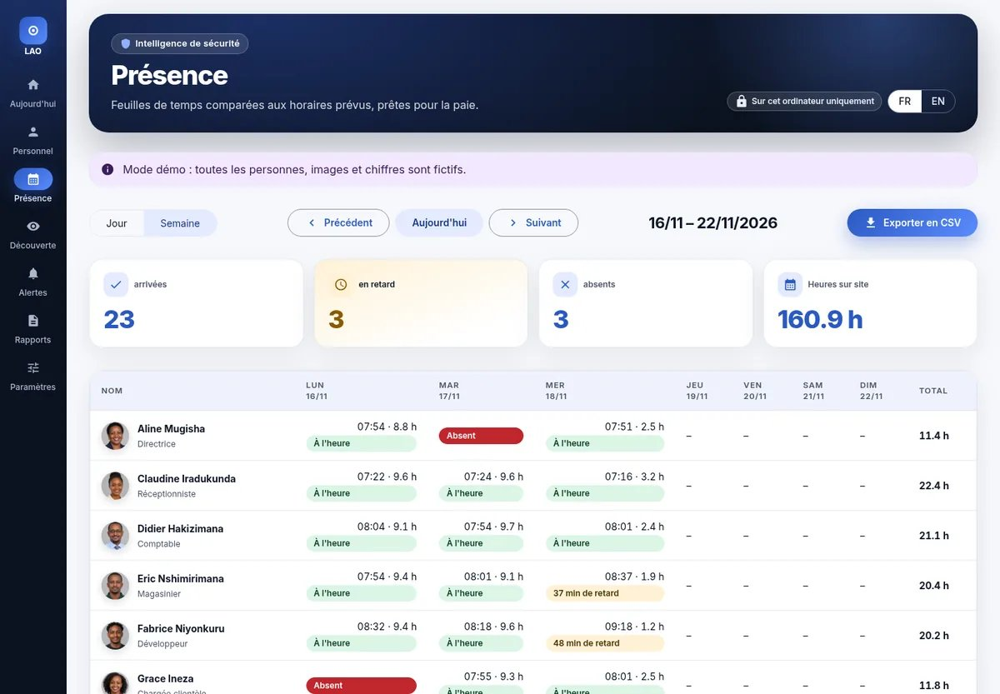
Présence
Feuilles de temps par jour et par semaine comparées aux horaires prévus, export CSV pour la paie et les RH.
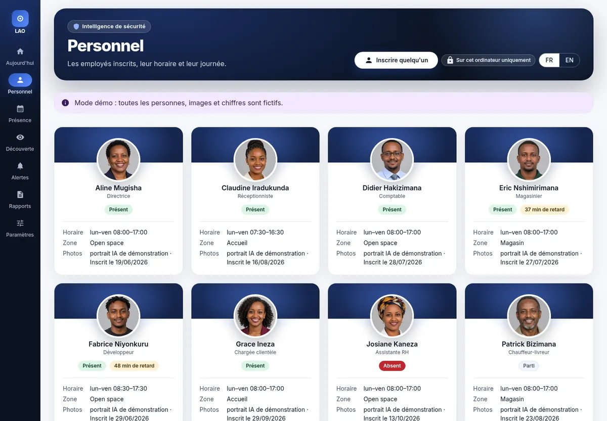
Personnel
Les employés inscrits, leur rôle, leur horaire et leur statut du jour.
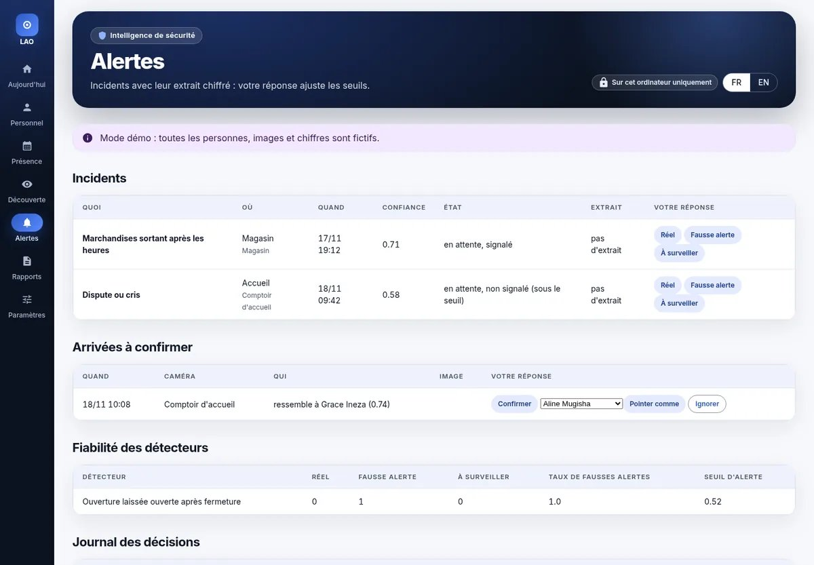
Alertes et journal
Incidents avec extrait chiffré, réponse du responsable en un clic, seuils qui s'ajustent, journal de toutes les décisions.
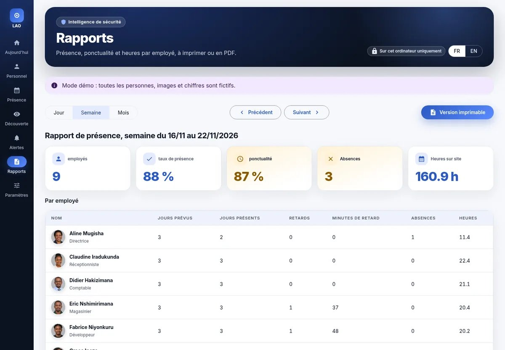
Rapports
Rapport de présence du jour, de la semaine ou du mois : taux de présence, ponctualité, absences et heures par employé, en version imprimable ou PDF.
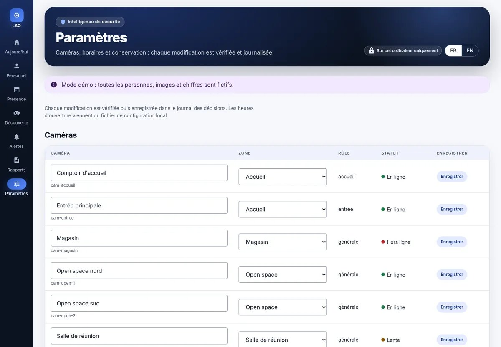
Paramètres
Noms et zones des caméras, jours et heures de chaque employé, durée de conservation des extraits : chaque modification est vérifiée et journalisée.
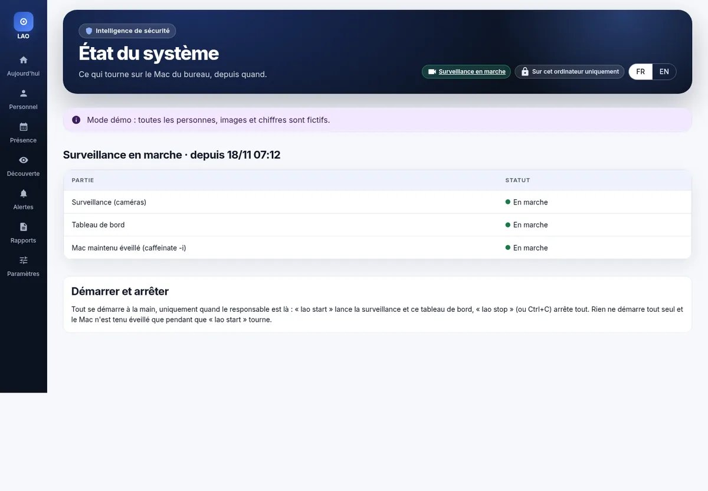
Démarrage manuel
« lao start » lance la surveillance et le tableau de bord, « lao stop » arrête tout. Rien ne démarre tout seul ; l'ordinateur reste éveillé seulement pendant le fonctionnement.
Mobile
Le tableau de bord tient dans la poche.
Sur téléphone, chaque écran passe en cartes lisibles avec une barre de navigation en bas, de grandes zones tactiles et un thème sombre. Il s'installe sur l'écran d'accueil comme une application.
- Barre de navigation en bas
- Tableaux en cartes
- Thème sombre
- Installable sur l'écran d'accueil
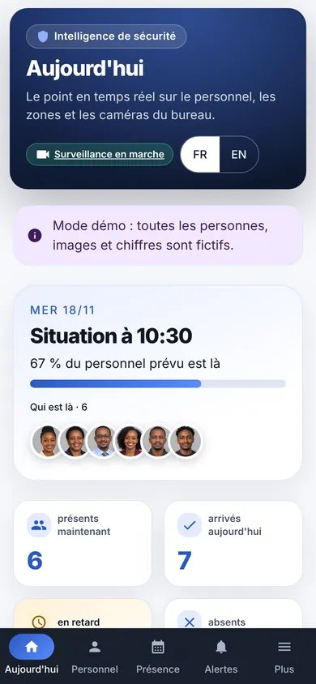
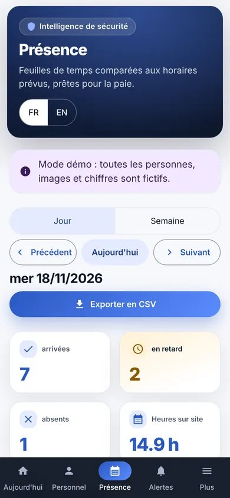
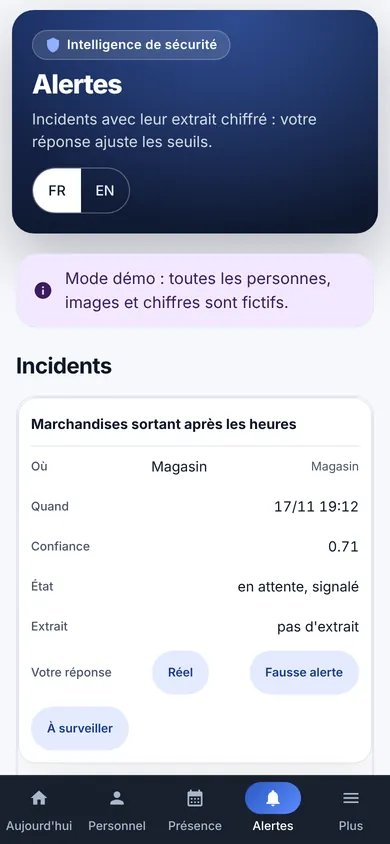
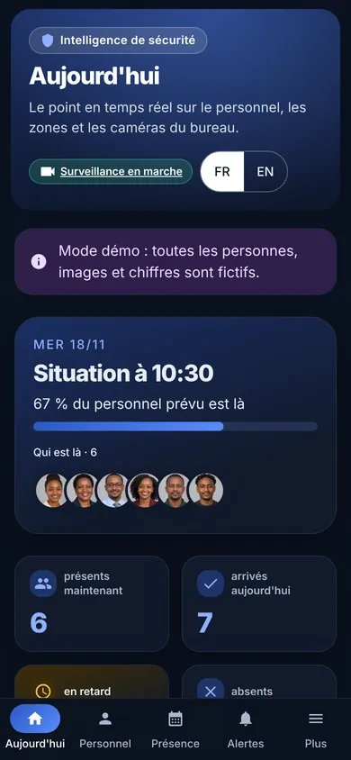
Impact
Pour les bureaux, les PME et le secteur public.
Ponctualité
Les retards sont visibles le jour même, sans pointeuse ni file d'attente.
Paie et RH plus justes
Des feuilles de temps objectives et exportables remplacent les cahiers.
Sécurité utile
Les incidents arrivent avec leur extrait vidéo, au lieu d'heures d'enregistrement à revoir.
Souveraineté des données
Une solution conçue au Burundi qui garde les données sur place : administrations, banques, écoles, hôpitaux, PME.
Coût faible
Pas d'abonnement ni de matériel biométrique : on réutilise les caméras existantes.
Emplois numériques
Installation, formation et maintenance par des techniciens locaux.
Feuille de route
Une architecture modulaire, prête à grandir.
- Aujourd'hui · v1
Aujourd'hui, Présence (jour, semaine, CSV), Personnel, Alertes et journal, Rapports imprimables, Découverte, Paramètres modifiables, « lao start / lao stop », version téléphone installable et thème sombre, mode démo, FR / EN.
- Décembre 2026
Inscription guidée dans l'application (webcam ou caméra, angles, contrôles de qualité).
- T1 2027
Pilote en bureau, plusieurs sites, rôles responsable et RH.
- T2 2027
Nouveaux modules de sécurité en option, ajoutés comme sections du même tableau de bord, selon les besoins et le cadre légal.
- Ensuite
Analyse d'impact, certification, déploiement auprès des administrations et des PME.
Parlons de votre bureau.
Démonstration sur données fictives disponible sur demande.
Alex Nahimana · POPEKI SURL · alex@popeki.com